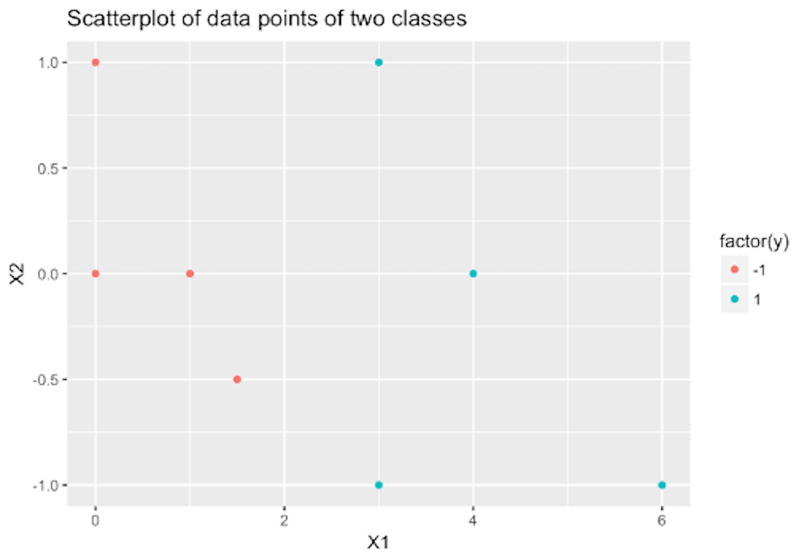
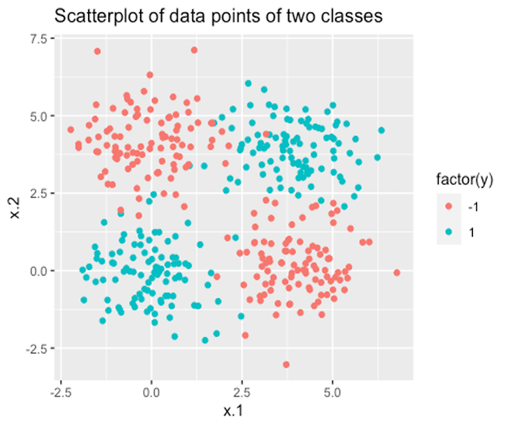
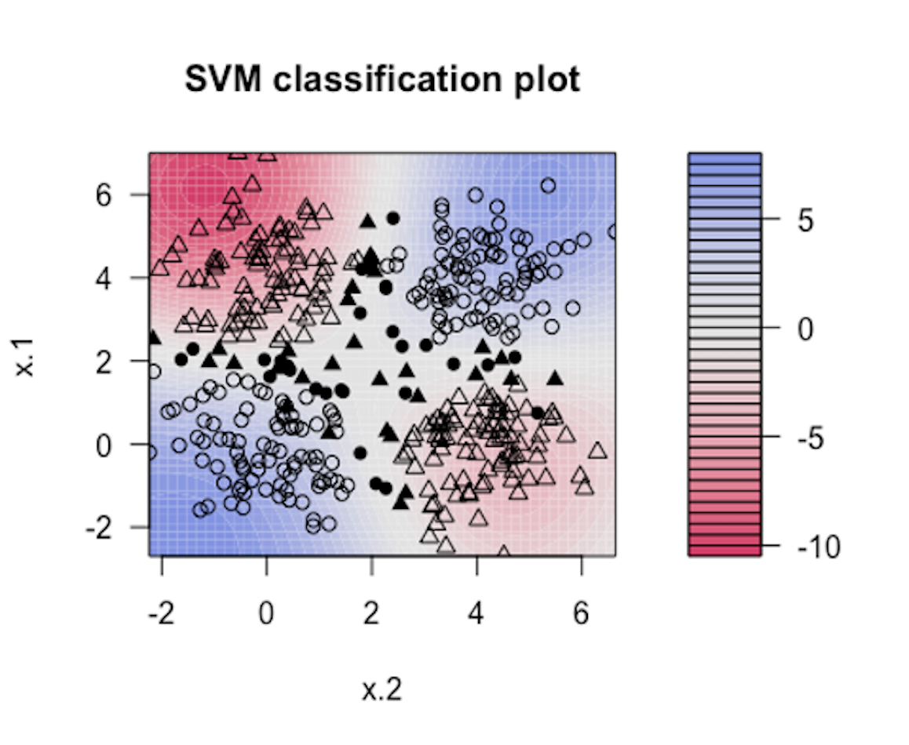

 Figure 137: How many support vectors are needed?
To build a linear SVM on the data shown in Figure 137, how many support vectors are needed (use visual inspection)?
Let’s consider the dataset in Table 32. Please (a) draw scatterplots and identify the support vectors if you’d like to build a linear SVM classifier; (b) manually derive the alpha values (i.e., the \(\alpha_i\)) for the support vectors and the offset parameter \(b\); (c) derive the weight vector (i.e., the \(\hat{\boldsymbol{w}}\)) of the SVM model; and (d) predict on the new dataset and fill in the column of \(y\) in Table 33.
Table 32: Dataset for building a SVM model in Q2
| ID | \(x_1\) | \(x_2\) | \(x_3\) | \(y\) |
|---|---|---|---|---|
| \(1\) | \(4\) | \(1\) | \(1\) | \(1\) |
| \(2\) | \(4\) | \(-1\) | \(0\) | \(1\) |
| \(3\) | \(8\) | \(2\) | \(1\) | \(1\) |
| \(4\) | \(-2.5\) | \(0\) | \(0\) | \(-1\) |
| \(5\) | \(0\) | \(1\) | \(1\) | \(-1\) |
| \(6\) | \(-0.3\) | \(-1\) | \(0\) | \(-1\) |
| \(7\) | \(2.5\) | \(-1\) | \(1\) | \(-1\) |
| \(8\) | \(-1\) | \(1\) | \(0\) | \(-1\) |
Table 33: Test data points for the SVM model in Q2
| ID | \(x_1\) | \(x_2\) | \(x_3\) | \(y\) |
|---|---|---|---|---|
| \(9\) | \(5.4\) | \(1.2\) | \(2\) | |
| \(10\) | \(1.5\) | \(-2\) | \(3\) | |
| \(11\) | \(-3.4\) | \(1\) | \(-2\) | |
| \(12\) | \(-2.2\) | \(-1\) | \(-4\) |
Follow up on the dataset used in Q2. Use the R pipeline for SVM on this data. Compare the alpha values (i.e., the \(\alpha_i\)), the offset parameter \(b\), and the weight vector (i.e., the \(\hat{\boldsymbol{w}}\)) from R and the result by your manual calculation in Q2.
Modify the R pipeline for Bootstrap and incorporate the glm package to write your own version of ensemble learning that ensembles a set of logistic regression models. Test it using the same data that has been used in the R lab for logistic regression models.
 Figure 138: A dataset with two classes
Use the dataset PimaIndiansDiabetes2 in the mlbench R package, run the R SVM pipeline on it, and summarize your findings.
Use R to generate a dataset with two classes as shown in Figure 138. Then, run SVM model with a properly selected kernel function on this dataset.
 Figure 139: Visualization of the decision boundary of an SVM model with Gaussian kernel
sigma=0.2. Result is shown in Figure 139. The blackened points are support vectors, and the contour reflects the characteristics of the decision boundary.The R code for generating Figure 139 is shown below.
Please follow this example and visualize linear, Laplace, Gaussian, and polynomial kernel functions with different parameter values.
require( 'kernlab' )
rbf.svm <- ksvm(y ~ ., data=data, type='C-svc', kernel='rbfdot',
kpar=list(sigma=0.2), C=100, scale=c())
plot(rbf.svm, data=data)